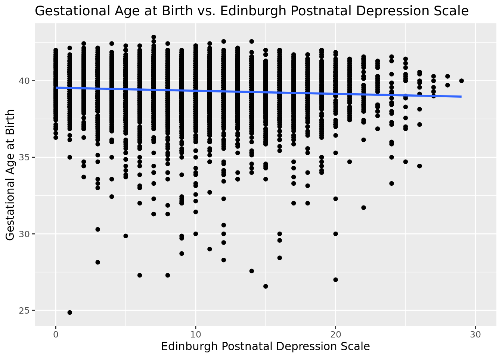
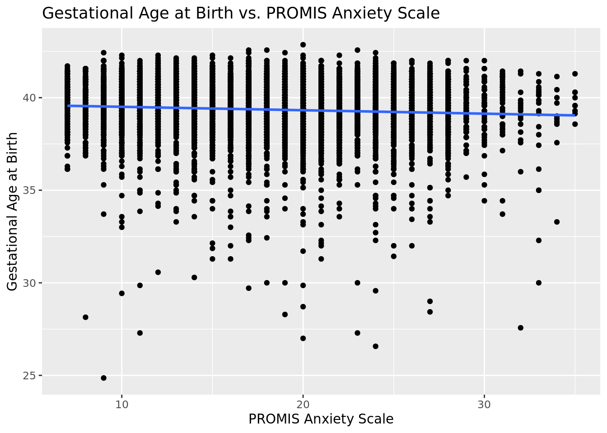
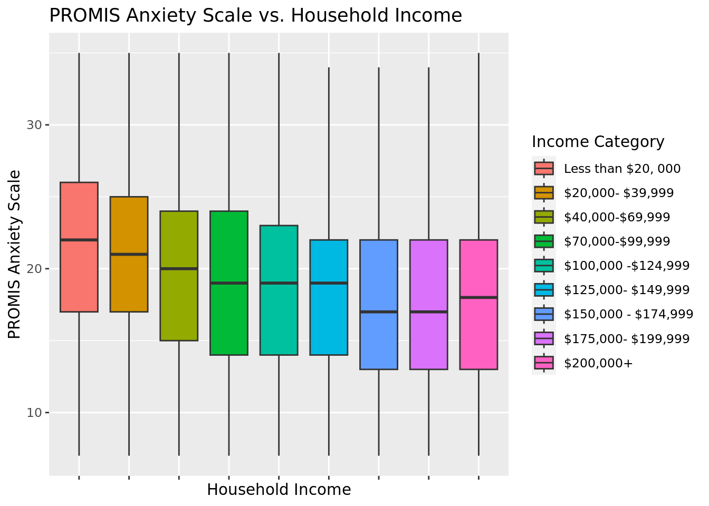
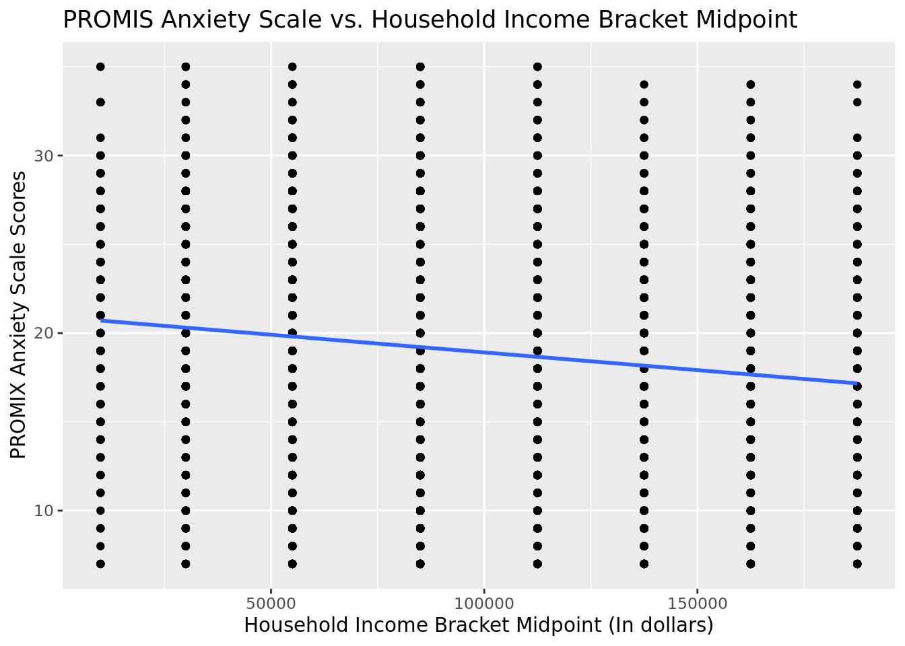
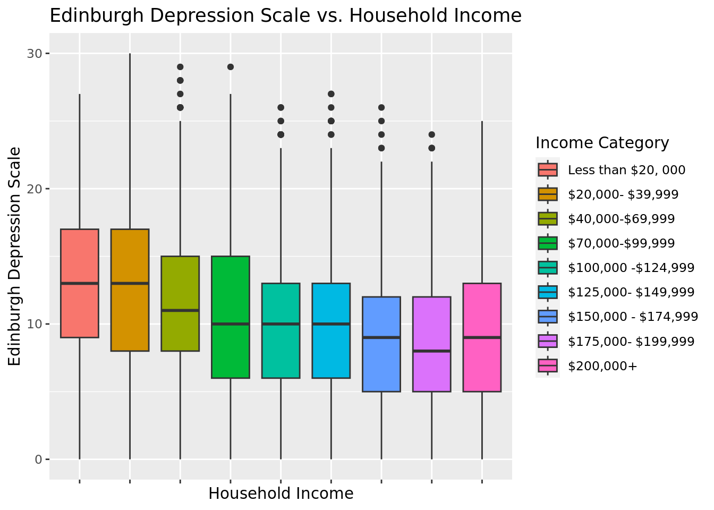
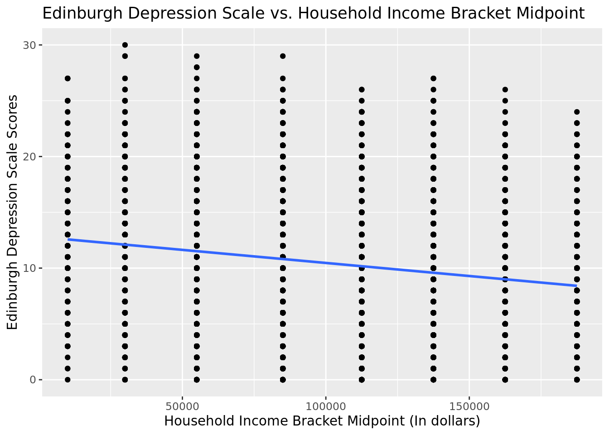

Rows: 10,772
Columns: 16
$ OSF_ID <dbl> 1, 2, 3, 4, 5, 6, 7, 8, 9…
$ Maternal_Age <dbl> 38.3, 34.6, 34.3, 28.8, 3…
$ Household_Income <chr> "$200,000+", "$200,000+",…
$ Maternal_Education <chr> "Masters degree", "Underg…
$ Edinburgh_Postnatal_Depression_Scale <dbl> 9, 4, NA, 9, 14, 3, 8, NA…
$ PROMIS_Anxiety <dbl> 13, 17, NA, 20, 20, 8, 15…
$ Gestational_Age_At_Birth <dbl> 39.71, NA, NA, 38.57, 39.…
$ `Delivery_Date(converted to month and year)` <chr> "Dec2020", NA, NA, "Dec20…
$ Birth_Length <dbl> 49.20, NA, NA, 41.00, 53.…
$ Birth_Weight <dbl> 3431, NA, NA, 2534, 3714,…
$ Delivery_Mode <chr> "Vaginally", NA, NA, "Vag…
$ NICU_Stay <chr> "No", NA, NA, "No", "No",…
$ Language <chr> "English", "English", "Fr…
$ Threaten_Life <dbl> 2, 2, NA, 53, 23, 29, 24,…
$ Threaten_Baby_Danger <dbl> 3, 33, NA, 67, 32, 36, 30…
$ Threaten_Baby_Harm <dbl> 27, 92, NA, 54, 71, 33, 3…An Analysis of Maternal Pregnancy and Mental Health under COVID-19
Report
Introduction and Data
Introduction
The COVID-19 pandemic impacted the lives of billions around the world physically, mentally, and emotionally. When lockdowns caused resources and interactions to be severely limited (Wei et al. 2021), many groups were impacted. Pregnant mothers and their offspring were one such group vulnerable to the abrupt change, evidenced by a 25% increase in maternal deaths from 2020 to 2021 as a result of COVID-19 (Office 2023). Aside from the physical manifestations of the pandemic’s outcomes, however, there were also significant mental repercussions. Research shows that poor mental health can affect the well-being of both the child and the mother (Ahmad and Vismara 2021). Through this project, we aim to explore the claim that psychological distress, such as anxiety and depression, is linked with any change in an unborn baby’s health, while also looking at any other factors that could contribute to this psychological distress.
To explore this topic, we developed the following research question: do pregnant women with higher anxiety and depression levels (measured in the PROMIS and Edinburgh Scale) tend to give birth to babies with a shorter gestational age? We utilized the “Pregnancy Protocols During COVID-19” dataset to help us answer this question by aiding in our understanding of the extent to which each of these factors impact the status of the offspring.
There is a potential ethical concern that can be addressed pertaining to the outcome of our findings. As noted, the information from this data is collected through a scaling system, which provides specific quantitative data, but it is uncertain how accurate this data truly is. Our main concern in the data is a weak representation of the relationship between mothers’ mental health and birth information. There is a possibility of human error when it comes to this system of collecting data for the study. For example, because mental health is often a subjective experience, it is difficult to quantitate, even with scales to measure. Additionally, it is uncertain if mothers may be influenced by the purpose of the study to answer differently than their true feelings. As a result, it is difficult to know how accurate these scaling reports are depicted to be, which can result in potentially misleading data. Although this could be a problem, the visualizations will provide further insight into our predictions.
Data
Data set: https://osf.io/ha5dp/
Paper from data: https://www.ncbi.nlm.nih.gov/pmc/articles/PMC10339202/
The “Pregnancy Protocols During COVID-19” data set was sourced from a group of researchers who conducted a study on mental health of pregnant individuals during the pandemic between 2020 to 2021 in Canada. Data was collected via questionnaires through the Research Electronic Data Capture (REDCap) website; participants were recruited with promotions through online methods, such as pregnancy organizations and advertisements in Facebook and Instagram. Throughout this study, the respondents, who were aged 17 to 35 years old, were followed-up multiple times during their pregnancy until one year post-birth (Lebel et al. 2023).
Each observation represents an individual mother who gave birth. The observations focused on the mothers’ mental health and the babies’ birth information such as weight, height, delivery mode, and date. The mental health information was collected through the Edinburgh Postnatal Depression Scale, a screening tool to assist medical practitioners in identifying if the patient suffers from postnatal depression, and the PROMIS anxiety scale, a patient-reported measurement system that assesses the fear and anxiety of an individual, which is often conducted before clinician visits. Higher values of each of these tests indicate more severe levels of depression/anxiety. The data set also includes demographic information about the mother, such as maternal age, maternal education, and household income (Lebel et al. 2023).
Research Question and Hypotheses
In our research, we address two questions:
Do pregnant individuals with higher anxiety and depression levels (measured in the PROMIS and Edinburgh scale) tend to have a shorter gestational age at birth? To what extent are these factors correlated with the gestational age at birth?
Is the household income range of pregnant individuals correlated with their anxiety and/or depression levels (measured in the PROMIS and Edinburgh scale) during the pandemic?
The first research question explores how mental health factors like anxiety and depression may be correlated with the birth status of offspring: specifically, the gestational age at birth. It not only looks at how these factors are linked to potentially premature offspring, but to what extent each one may have an impact. We hypothesize a potential negative correlation between anxiety and depression levels and gestational age, with higher anxiety/depression levels predicting lower gestational age at birth.
The second research question investigates if the socioeconomic class of pregnant individuals correlates to their mental health state, which is measured in the PROMIS anxiety scale and the Edinburgh scale. Through it, we aim to explore our hypothesis: financially stable mothers tend to experience better mental health compared to mothers in other socioeconomic status during the pandemic.
Question 1:
Explanatory variable(s): Anxiety level (PROMIS scale), depression level (Edinburgh scale) are both quantitative variables.
Response variable(s): Gestational Age at Birth is a quantitative variable measured in weeks.
Question 2:
Explanatory variable(s): Household income is a categorical variable with categories representing ranges of income.
Response variable(s): Anxiety level (PROMIS scale), depression level (Edinburgh scale) are both quantitative variables.
Literature
Link: https://bmcpregnancychildbirth.biomedcentral.com/articles/10.1186/s12884-021-04337-9
This article describes a study conducted on 12 participants, ranging from 30-43 years old, between 1-6 months after giving birth. The study found that six main themes emerged from their responses to interviews:
Challenges related to child-bearing in their daily lives: this included employment, access to food, and transportation
Increased worry, fear, and uncertainty: patients expressed worry about their partner contracting the virus, uncertainty about the effects it might have on their baby due to lack of information, etc.
Pervasive sense of loss: mothers expressed a disconnect between their expectations of pregnancy and the reality, in terms of bonding with their baby, familial support, etc.
Challenge accessing healthcare: in terms of mental health care, physiotherapy, breastfeeding support
Coping strategies with stress of pandemic: patients described seeking out information or adaptive behaviors such as self-care and seeking support
Offered advice for others: advocating for themselves, avoiding isolation
The article cited describes the mental health implications of the COVID-19 pandemic on pregnancy in fairly broad terms, with general themes of worry, challenges, loss, etc. It is clear that the pandemic has had negative impacts on pregnant women, and we are interested in looking at specific aspects of this dynamic. Our research question is specific and looks at quantifiable factors, such as household income and anxiety levels in relation to outcomes such as gestational age of the baby.
Glimpse of data
Methodology
Initially, we used a scatterplot to visualize the relationship between gestational age and depression (as measured by the Edinburgh Postnatal Depression Scale).
Gestational Age vs. Depression

# A tibble: 2 × 5
term estimate std.error statistic p.value
<chr> <dbl> <dbl> <dbl> <dbl>
1 (Intercept) 39.5 0.0423 935. 0
2 Edinburgh_Postnatal_Depression_Scale -0.0201 0.00380 -5.29 0.000000124# A tibble: 1 × 12
r.squared adj.r.squared sigma statistic p.value df logLik AIC BIC
<dbl> <dbl> <dbl> <dbl> <dbl> <dbl> <dbl> <dbl> <dbl>
1 0.00448 0.00432 1.60 28.0 1.24e-7 1 -11774. 23554. 23575.
# ℹ 3 more variables: deviance <dbl>, df.residual <int>, nobs <int>Based on the scatterplot, there seems to be a large spread of observations with no immediate clear pattern. After fitting a line of best fit and getting a very low p-value, it turns out there is a slightly negative slope, with gestational age decreasing on average by .02 weeks with every increase in one point on the EDPS scale. This negative correlation suggests that higher depression rating could correlate with lower gestational age. However, the \(R^2\) value of nearly 0 suggests depression level doesn’t explain variability in gestational age well. This means it is not a good idea to use this model to predict other values.
We then visualized gestational age vs. anxiety.
Gestational Age vs. Anxiety

# A tibble: 2 × 5
term estimate std.error statistic p.value
<chr> <dbl> <dbl> <dbl> <dbl>
1 (Intercept) 39.7 0.0658 603. 0
2 PROMIS_Anxiety -0.0185 0.00340 -5.45 0.0000000521# A tibble: 1 × 12
r.squared adj.r.squared sigma statistic p.value df logLik AIC BIC
<dbl> <dbl> <dbl> <dbl> <dbl> <dbl> <dbl> <dbl> <dbl>
1 0.00476 0.00460 1.60 29.7 5.21e-8 1 -11745. 23496. 23516.
# ℹ 3 more variables: deviance <dbl>, df.residual <int>, nobs <int>Once again, there seems to be a large spread of observations with no immediate clear pattern. Like with gestational age vs. depression, the line of best fit and low p-value suggest there is a slightly negative slope, with gestational age decreasing on average by about .02 weeks with every increase in one point on the PROMIS scale, suggesting higher anxiety ratings could correlate to lower gestational age via a negative relationship. However, the \(R^2\) value of nearly 0 again suggests anxiety level doesn’t explain variability in gestational age well. As a result, it is still not a good idea to use this variable to predict gestational age.
# A tibble: 4 × 5
term estimate std.error statistic p.value
<chr> <dbl> <dbl> <dbl> <dbl>
1 (Intercept) 3.97e+1 0.115 346. 0
2 PROMIS_Anxiety -1.33e-2 0.00778 -1.71 0.0864
3 Edinburgh_Postnatal_Depression_Scale -1.52e-2 0.0134 -1.14 0.255
4 PROMIS_Anxiety:Edinburgh_Postnatal_Depre… 2.47e-4 0.000584 0.423 0.673 # A tibble: 1 × 12
r.squared adj.r.squared sigma statistic p.value df logLik AIC BIC
<dbl> <dbl> <dbl> <dbl> <dbl> <dbl> <dbl> <dbl> <dbl>
1 0.00520 0.00472 1.60 10.8 4.37e-7 3 -11744. 23497. 23531.
# ℹ 3 more variables: deviance <dbl>, df.residual <int>, nobs <int>We decided to fit an interaction model to see if the \(R^2\) may increase compared to individual models; however, it barely increased. This suggests that using both anxiety and depression as predictors that interact with each other could be slightly better than using single variables, but not by much.
Because we could not establish a strong relationship between gestational age and mental health, we decided to look at factors that influenced mental health.
Anxiety vs. Household Income

# A tibble: 9 × 2
reordered_income medanxiety
<fct> <dbl>
1 Less than $20, 000 22
2 $20,000- $39,999 21
3 $40,000-$69,999 20
4 $70,000-$99,999 19
5 $100,000 -$124,999 19
6 $125,000- $149,999 19
7 $150,000 - $174,999 17
8 $175,000- $199,999 17
9 $200,000+ 18We used a boxplot to visualize the relationship between anxiety and household income. Based on the plot, there appears to be a visible downward trend in median anxiety scores as annual income range increases. This is supported by a tibble of the median anxiety score for each bracket, showing that the median decreases with each bracket, with the exception of the $200,000+ range.
We can perform a Kruskal-Wallis statistical test to test if there if the medians of all these groups are statistically the same.
Null hypothesis: The median anxiety level of each income category is the same.
Alternative hypothesis: The median anxiety level of the income categories is not the same across each category (at least one group’s median may be different).
Kruskal-Wallis rank sum test
data: PROMIS_Anxiety by Household_Income
Kruskal-Wallis chi-squared = 234.83, df = 8, p-value < 2.2e-16We received a p-value of nearly 0 (2.2e-16), so we reject the null hypothesis. There is sufficient statistical evidence that the median anxiety level of all income levels is not the same.
Now, let’s try to see if there is a downward trend between the income categories and the anxiety levels. We can transform each category into a quantitative value using the midpoint of each category, then fit a regression model between anxiety level and the midpoint of each income category. We removed $200,000+ because there is no midpoint to get from that category.
`geom_smooth()` using formula = 'y ~ x'
# A tibble: 2 × 5
term estimate std.error statistic p.value
<chr> <dbl> <dbl> <dbl> <dbl>
1 (Intercept) 20.9 0.164 127. 0
2 midpointincomes -0.0000199 0.00000143 -14.0 5.72e-44# A tibble: 1 × 12
r.squared adj.r.squared sigma statistic p.value df logLik AIC BIC
<dbl> <dbl> <dbl> <dbl> <dbl> <dbl> <dbl> <dbl> <dbl>
1 0.0223 0.0222 6.00 196. 5.72e-44 1 -27499. 55004. 55025.
# ℹ 3 more variables: deviance <dbl>, df.residual <int>, nobs <int>Though the \(R^2\) value is low again, we can see that the p-value is extremely low and slope coefficient is negative, indicating that there is likely a negative relationship between the anxiety levels and the midpoint incomes (though it may not be very strong). Although the coefficient is very low, it can be interpreted in the context of the scenario; with every $10,000 increase in income, we can estimate on average there is a .2 decrease in anxiety on the PROMIS scale. There is a visible downward trend from the line of best fit. However, we should not use this model to make predictions due to the low \(R^2\).
Depression Level vs. Household Income
Warning: Removed 980 rows containing non-finite values (`stat_boxplot()`).
# A tibble: 9 × 2
reordered_income meddep
<fct> <dbl>
1 Less than $20, 000 13
2 $20,000- $39,999 13
3 $40,000-$69,999 11
4 $70,000-$99,999 10
5 $100,000 -$124,999 10
6 $125,000- $149,999 10
7 $150,000 - $174,999 9
8 $175,000- $199,999 8
9 $200,000+ 9We then repeated our process with depression using scores from the Edinburgh Postnatal Depression Scale against household income brackets.
Based on both the boxplot and the medians tibble, there again appears to be a visible downward trend in median depression scores as the annual income range increases, with the only exception being the $200,000+ range once again. Other than this, the median scores all decreased.
We can perform another Kruskal-Wallis statistical test to test if there if the median depression scores across brackets are the same.
Null hypothesis: The median depression level of each income category is the same.
Alternative hypothesis: The median depression level of the income categories is not the same across each category (at least one group’s median may be different).
Kruskal-Wallis rank sum test
data: Edinburgh_Postnatal_Depression_Scale by Household_Income
Kruskal-Wallis chi-squared = 367.77, df = 8, p-value < 2.2e-16We get a p-value of nearly 0 (2.2e-16), so we reject the null hypothesis. We have sufficient statistical evidence that the median depression level of all income levels is not the same.
Now, let’s try to see if there is a downward trend between the income categories and the depression levels. We can transform each category into a quantitative value using the midpoint of each category, then fit a regression model between depression level and the midpoint of each income category. We removed $200,000+ because there is no midpoint to get from that category.
`geom_smooth()` using formula = 'y ~ x'
# A tibble: 2 × 5
term estimate std.error statistic p.value
<chr> <dbl> <dbl> <dbl> <dbl>
1 (Intercept) 12.8 0.148 86.4 0
2 midpointincomes -0.0000234 0.00000129 -18.2 6.92e-73# A tibble: 1 × 12
r.squared adj.r.squared sigma statistic p.value df logLik AIC BIC
<dbl> <dbl> <dbl> <dbl> <dbl> <dbl> <dbl> <dbl> <dbl>
1 0.0374 0.0373 5.41 332. 6.92e-73 1 -26614. 53234. 53255.
# ℹ 3 more variables: deviance <dbl>, df.residual <int>, nobs <int>Though the \(R^2\) is low again, the p-value is low and the slope coefficient is negative, suggesting that there is likely some negative relationship between the depression levels and the midpoint incomes (though it is likely not strong). Again, the slope can be interpreted in the context of the problem, with every 10,000 dollar increase in income, we can expect, on average, a .234 decrease in Edinburgh scale measurement for depression. We should not use this model to make predictions due to the low \(R^2\).
Results
We attempted to answer our research question at the correlation between gestational age and two mental health factors, such as anxiety measured by the PROMIS scale and depression measured by the Edinburgh Postnatal Depression Scale. To do this, we fitted a simple linear regression to each of the mental health measures to determine if there was a linear relationship between mental health and gestational age. We found a very weak relationship, with the gestational age decreasing by approximately .02 weeks with each increase in one point on the PROMIS or EPDS scales. However, because the \(R^2\) for each model was so low (around 0.004), we determined that there was insufficient evidence to argue that anxiety/depression levels can accurately explain variance in gestational age and thus accurately predict it. Even looking at the graphs visibly, there are clearly large residuals between the line of best fit and many of the points, and the spread is significant. As a result, we concluded that based on our data, there may be a weak relationship between quantified mental health measurements and the gestational age of mothers at childbirth; , our model cannot be used to predict gestational age. Our hypothesis was not completely ruled out due to there potentially being a weak negative relationship between the these two variables (gestational age vs anxiety/depression), but we cannot conclude that there is a strong relationship like we had hoped.
Regarding the question about mental health vs. income ranges, we found that there is a noticeable negative relationship between household income and anxiety, as well as household income and depression. The boxplots showed visible decreases in anxiety and depression levels as the household income brackets increased. After displaying tibbles showing the median depression and anxiety measurements at each income level, they showed visible decreases as the income ranges increased. However, we cannot make conclusive statement that this is a strong relationship based solely on visual cues, so we conducted a Kruskal-Wallis test and concluded that there was evidence that the income brackets had statistically different medians. We then transformed the categorical income brackets into quantitative values by taking the midpoint of each category and plotted a simple linear regression for both anxiety and depression. Though the \(R^2\) for each of these was low, the negative slope coefficients and near-zero p-values indicate evidence for some sort of a negative relationship between income and anxiety/depression. There is also a visibly negative line of best fit. However, the model fitted should not be used to predict values. We conclude that based on our data, there is evidence to support that the median anxiety and depression levels across income categories is different, and that there could be evidence pointing to a negative relationship (as income increases, anxiety/depression levels decrease), though the relationship is likely not very strong due to the low \(R^2\). Our initial hypothesis holds merit based on our results, but we advise further testing to make stronger claims. One potential way to make our results much more accurate and conclusive would be to have the actual household income for each person instead of just having their range.
Because the data was not sampled randomly from the population, it is not generalizable, meaning we cannot apply our results to the entire population of Canada mothers giving birth during the time frame the data was collected. There was also no random assignment used due to the study being correlational and not experimental, so we cannot infer causation between variables when doing regression testing.
Appendix
library(tidyverse)
library(tidymodels)
library(openintro)
library(dsbox)
pregnancy <- read_csv("data/OSFData_Upload_2023_Mar30.csv")
glimpse(pregnancy)
pregnancy |>
ggplot(
aes(x = Edinburgh_Postnatal_Depression_Scale, y = Gestational_Age_At_Birth)
) +
geom_point() +
geom_smooth(method = "lm", se = F) +
labs(title = "Gestational Age at Birth vs. Edinburgh Postnatal Depression Scale",
x = "Edinburgh Postnatal Depression Scale",
y = "Gestational Age at Birth")
gestvsdepreg <- linear_reg() |>
set_engine("lm") |>
fit(Gestational_Age_At_Birth ~ Edinburgh_Postnatal_Depression_Scale, data = pregnancy)
tidy(gestvsdepreg)
glance(gestvsdepreg)
pregnancy |>
ggplot(
aes(x = PROMIS_Anxiety, y = Gestational_Age_At_Birth)
) +
geom_point() +
geom_smooth(method = "lm", se = F) +
labs(title = "Gestational Age at Birth vs. PROMIS Anxiety Scale",
x = "PROMIS Anxiety Scale",
y = "Gestational Age at Birth")
gestvsanxreg <- linear_reg() |>
set_engine("lm") |>
fit(Gestational_Age_At_Birth ~ PROMIS_Anxiety, data = pregnancy)
tidy(gestvsanxreg)
glance(gestvsanxreg)
gestvsanxdepreg <- linear_reg() |>
set_engine("lm") |>
fit(Gestational_Age_At_Birth ~ PROMIS_Anxiety * Edinburgh_Postnatal_Depression_Scale, data = pregnancy)
tidy(gestvsanxdepreg)
glance(gestvsanxdepreg)
pregnancy |>
mutate(
reordered_income = fct_relevel(as.factor(Household_Income), "Less than $20, 000", "$20,000- $39,999", "$40,000-$69,999", "$70,000-$99,999", "$100,000 -$124,999", "$125,000- $149,999", "$150,000 - $174,999", "$175,000- $199,999", "$200,000+")
) |>
drop_na(Household_Income) |>
ggplot(
aes(x = reordered_income,
y = PROMIS_Anxiety,
fill = reordered_income)
) +
geom_boxplot() +
theme(axis.text.x = element_blank()) +
labs(title = "PROMIS Anxiety Scale vs. Household Income",
x = "Household Income",
y = "PROMIS Anxiety Scale",
fill = "Income Category")
pregnancy |>
mutate(
reordered_income = fct_relevel(as.factor(Household_Income), "Less than $20, 000", "$20,000- $39,999", "$40,000-$69,999", "$70,000-$99,999", "$100,000 -$124,999", "$125,000- $149,999", "$150,000 - $174,999", "$175,000- $199,999", "$200,000+")
) |>
drop_na(Household_Income, PROMIS_Anxiety) |>
group_by(reordered_income) |>
summarize(medanxiety=median((PROMIS_Anxiety)))
kruskal.test(PROMIS_Anxiety ~ Household_Income, data = pregnancy)
midpointpreg <- pregnancy |>
drop_na(Household_Income, PROMIS_Anxiety, Edinburgh_Postnatal_Depression_Scale) |>
mutate(
midpointincomes = case_when(
Household_Income == "Less than $20, 000" ~ 10000,
Household_Income == "$20,000- $39,999" ~ 30000,
Household_Income == "$40,000-$69,999" ~ 55000,
Household_Income == "$70,000-$99,999" ~ 85000,
Household_Income == "$100,000 -$124,999" ~ 112500,
Household_Income == "$125,000- $149,999" ~ 137500,
Household_Income == "$150,000 - $174,999" ~ 162500,
Household_Income == "$175,000- $199,999" ~ 187500,
Household_Income == "$200,000+" ~ 200000
)) |>
filter(midpointincomes != 200000)
midpointpreg |>
ggplot(
aes(x = midpointincomes, y = PROMIS_Anxiety)
) +
geom_point() +
geom_smooth(method = "lm", se = F) +
labs(title = "PROMIS Anxiety Scale vs. Household Income Bracket Midpoint",
x = "Household Income Bracket Midpoint (In dollars)",
y = "PROMIX Anxiety Scale Scores")
anxvsmidincome <- linear_reg() |>
set_engine("lm") |>
fit(PROMIS_Anxiety ~ midpointincomes, data = midpointpreg)
tidy(anxvsmidincome)
glance(anxvsmidincome)
pregnancy |>
mutate(
reordered_income = fct_relevel(as.factor(Household_Income), "Less than $20, 000", "$20,000- $39,999", "$40,000-$69,999", "$70,000-$99,999", "$100,000 -$124,999", "$125,000- $149,999", "$150,000 - $174,999", "$175,000- $199,999", "$200,000+")) |>
drop_na(Household_Income) |>
ggplot(
aes(x = reordered_income,
y = Edinburgh_Postnatal_Depression_Scale,
fill = reordered_income)
) +
geom_boxplot() +
theme(axis.text.x = element_blank()) +
labs(title = "Edinburgh Depression Scale vs. Household Income",
x = "Household Income",
y = "Edinburgh Depression Scale",
fill = "Income Category")
pregnancy |>
mutate(
reordered_income = fct_relevel(as.factor(Household_Income), "Less than $20, 000", "$20,000- $39,999", "$40,000-$69,999", "$70,000-$99,999", "$100,000 -$124,999", "$125,000- $149,999", "$150,000 - $174,999", "$175,000- $199,999", "$200,000+")
) |>
drop_na(Household_Income, Edinburgh_Postnatal_Depression_Scale) |>
group_by(reordered_income) |>
summarize(meddep=median((Edinburgh_Postnatal_Depression_Scale)))
kruskal.test(Edinburgh_Postnatal_Depression_Scale ~ Household_Income, data = pregnancy)
midpointpreg |>
ggplot(
aes(x = midpointincomes, y = Edinburgh_Postnatal_Depression_Scale)
) +
geom_point() +
geom_smooth(method = "lm", se = F) +
labs(title = "Edinburgh Depression Scale vs. Household Income Bracket Midpoint",
x = "Household Income Bracket Midpoint (In dollars)",
y = "Edinburgh Depression Scale Scores")
depvsmidincome <- linear_reg() |>
set_engine("lm") |>
fit(Edinburgh_Postnatal_Depression_Scale ~ midpointincomes, data = midpointpreg)
tidy(depvsmidincome)
glance(depvsmidincome)References
Ahmad, Monica, and Laura Vismara. 2021. “The Psychological Impact of COVID-19 Pandemic on Women’s Mental Health During Pregnancy: A Rapid Evidence Review.” International Journal of Environmental Research and Public Health 18 (13): 7112. https://doi.org/10.3390/ijerph18137112.
Kolker, Sabrina, Anne Biringer, Jessica Bytautas, Haley Blumenfeld, Sahana Kukan, and June C. Carroll. 2021. “Pregnant During the COVID-19 Pandemic: An Exploration of Patients’ Lived Experiences.” BMC Pregnancy and Childbirth 21 (1). https://doi.org/10.1186/s12884-021-04337-9.
Lebel, Catherine, Lianne Tomfohr-Madsen, Gerald Giesbrecht, Beatrice Pui Yee Lai, Mercedes Bagshawe, Makayla Freeman, Mary Kate Hapin, et al. 2023. “Prenatal Mental Health Data and Birth Outcomes in the Pregnancy During the COVID-19 Pandemic Dataset.” Data in Brief 49 (August): 109366. https://doi.org/10.1016/j.dib.2023.109366.
Office, U. S. Government Accountability. 2023. “Maternal Health: Outcomes Worsened and Disparities Persisted During the Pandemic.” Maternal Health: Outcomes Worsened and Disparities Persisted During the Pandemic | U.S. GAO. https://www.gao.gov/products/gao-23-105871#:~:text=Pregnant%20women%20with%20COVID%2D19.
Wei, Shu Qin, Marianne Bilodeau-Bertrand, Shiliang Liu, and Nathalie Auger. 2021. “The Impact of COVID-19 on Pregnancy Outcomes: A Systematic Review and Meta-Analysis.” Canadian Medical Association Journal 193 (16): E540–48. https://doi.org/10.1503/cmaj.202604.